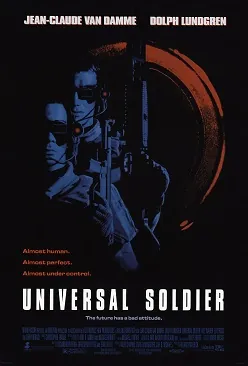

The genetics
The UniSols are presented as genetically augmented soldiers, reanimated corpses with enhanced healing and strength, created in a secret military programme begun in the 1960s to produce the perfect soldier. The film's science mixes genetics with cryonics, reanimation, a neural serum that suppresses memory and keeps the soldiers obedient, and injectable muscle enhancers; the genetic element is a label more than a mechanism. The programme has serious flaws: the soldiers overheat and need ice baths, and their last memories return amplified, so that Scott relives his Vietnam madness. The project and its leaders are portrayed as unethical and secretive, turning dead men into weapons, covering up the project and trying to kill a journalist; the scientist Dr. Gregor helps the heroes in the theatrical version but is a manipulative villain in an alternative ending. The film belongs to the early-1990s wave of super-soldier action films; nothing in it resembles a real genetic technique.
The story
In Vietnam in 1969, Private Luc Deveraux refuses to take part in atrocities committed by his deranged sergeant, Andrew Scott, and the two kill each other. Their bodies are secretly frozen. Decades later they are revived, with other dead soldiers, as 'Universal Soldiers' (UniSols), an elite counter-terrorism unit whose memories are suppressed with a neural serum. When Deveraux begins to recover memories of his past, he rescues the television reporter Veronica Roberts, who has sneaked onto the base and discovered the project, and the two go on the run. Scott, whose madness returns, kills the unit's commander and leads the other UniSols in pursuit. Dr. Christopher Gregor, a scientist from the programme, explains to them its origins and flaws. The chase ends at Deveraux's family farm in Louisiana, where Deveraux, after injecting himself with muscle enhancers, kills Scott in a hay harvester.